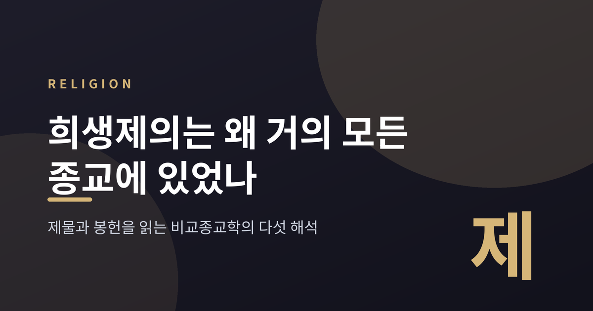
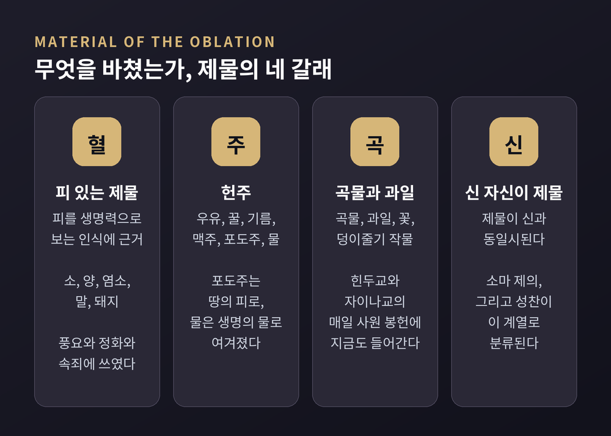
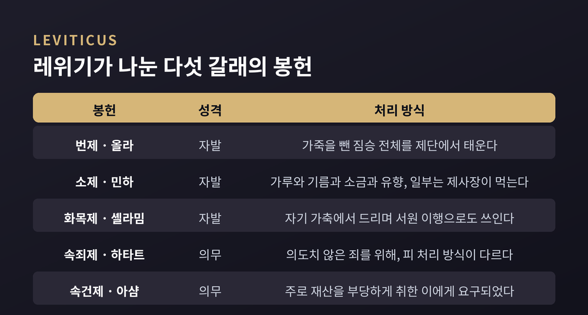
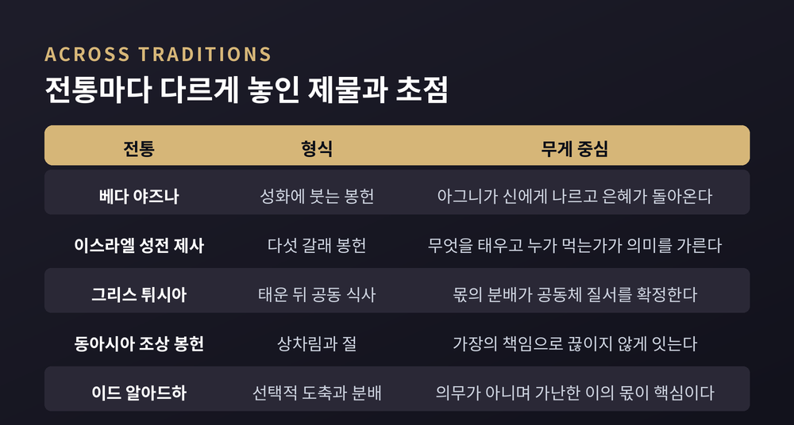
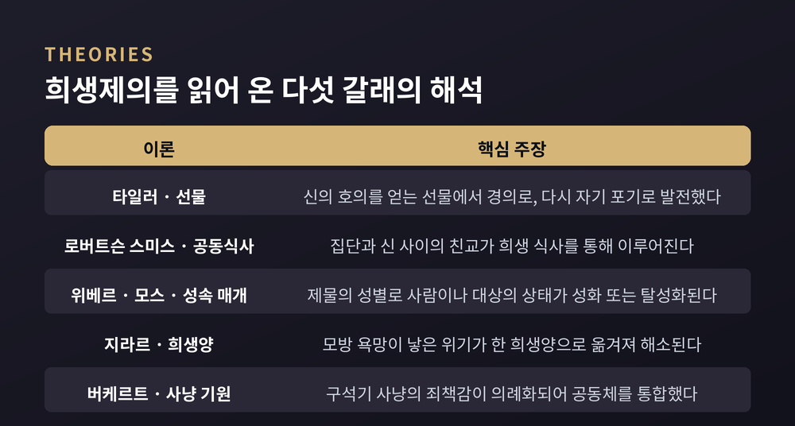
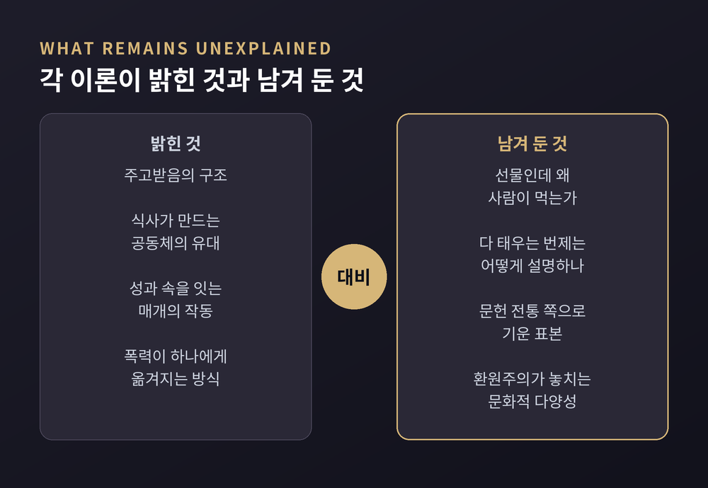
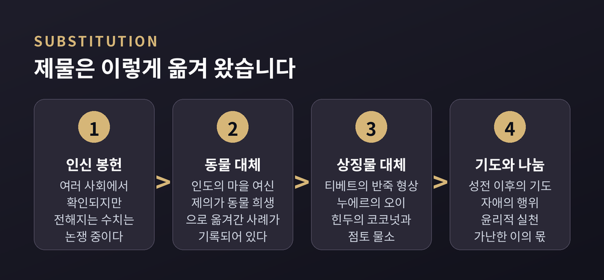

베다의 야즈나부터 성전 제사와 그리스 공희, 조상 봉헌까지 비교종교학으로 읽는 정리
이번 글에서는 희생제의를 비교종교학의 시선으로 정리해 보겠습니다. 베다의 야즈나부터 고대 이스라엘의 성전 제사, 그리스의 공희와 동아시아의 조상 봉헌까지, 서로 만난 적 없는 문명들이 왜 비슷한 형식의 제물을 바쳤는지를 살펴봅니다. 어느 종교의 제사가 옳았는지를 가리는 글이 아니라, 학자들이 이 현상을 어떻게 읽어 왔고 어디에서 막혔는지를 관찰하는 글입니다.
세 줄 요약

브리태니커는 희생제의를 이렇게 정의합니다. 인간이 신성한 질서와 올바른 관계를 세우거나 유지하거나 회복하기 위해 어떤 대상을 신적 존재에게 바치는 종교적 예식입니다. 봉헌(oblation)이라는 별칭도 함께 쓰입니다.
여기서 중요한 것은 정의의 무게 중심이 '죽임'이 아니라 '관계'에 놓여 있다는 점입니다. 피를 흘리는 일은 여러 방식 가운데 하나였을 뿐, 유일한 목적도 유일한 형식도 아니었습니다.
그래서 종교학은 희생제의를 야만의 잔재로도, 신이 요구한 절차로도 규정하지 않습니다. 인간이 성스러운 것과 관계 맺어 온 방식의 하나로 기술합니다. 브리태니커 항목의 결론부는 희생제의가 합리적 용어로 환원되는 현상이 아니며 "많은 민족에게 종교 생활의 심장부 그 자체였다"고 적습니다.
한 가지는 처음부터 말씀드리는 편이 낫겠습니다. 19세기 후반 비교종교학이 성립한 이래 기원을 규명하려는 시도가 이어졌지만, 그 시도들은 결정적이지 않았습니다. 브리태니커의 표현을 그대로 옮기면, 여러 종류의 희생제의 목록을 길게 만드는 일은 쉽지만 모든 형태를 알맞은 자리에 배치할 만족스러운 체계를 찾기는 어렵거나 불가능하다는 데 많은 학자가 동의할 것입니다.
제물의 종류부터 보겠습니다.
피 있는 제물의 밑바탕에는 피를 인간과 짐승 안의 신성한 생명력으로 보는 인식이 있습니다. 제물에 깃든 생명이 되돌려짐으로써 신이 살고 인간과 자연이 산다는 관념입니다. 이 힘은 대지의 풍요, 정화, 속죄에 두루 쓰였습니다.
제물과 신격 사이에는 대응 규칙이 있었습니다. 베다 제의에서 밤과 새벽의 여신들에게는 흰 송아지를 둔 검은 소의 젖을, 태양신 수리야에게는 흰 숫염소를 바쳤습니다. 그리스에서는 지하 세계의 신들에게 검은 짐승을, 태양신 헬리오스에게 빠른 말을, 대지모 데메테르에게 새끼 밴 암퇘지를 바쳤습니다. 아무거나 바치는 것이 아니라, 받는 쪽에 어울리는 것을 바쳤습니다.
피 없는 제물도 폭이 넓었습니다. 헌주에는 우유와 꿀과 기름과 맥주와 포도주와 물이 쓰였습니다. 포도주는 '포도의 피'이자 '땅의 피'로 여겨졌고, 물은 언제나 생명의 물이었습니다. 곡물과 과일과 꽃도 빠지지 않았습니다. 힌두교와 자이나교에서는 지금도 꽃과 과일과 곡물이 매일의 사원 봉헌물에 들어갑니다.
여기에 한 갈래가 더 있습니다. 신 자신이 제물이 되는 형태입니다. 힌두 소마 제의에서는 소마 신과 동일시된 식물을 짜서 그 즙을 의례적으로 마십니다. 그리스도교의 성찬도 종교학의 분류에서는 이 계열에 놓입니다. 각 전통이 자기 의례를 어떻게 이해하는지를 기술한 것이지, 그 이해가 참이라는 판정은 아닙니다.

브리태니커는 희생제의에 관한 사변과 규정 의례가 다른 어디보다도 인도의 베다 및 후대 힌두 종교에서 충실하게 다듬어진 것으로 보인다고 서술합니다. 브라흐마나 문헌에서 알려진 이 체계는 한 해의 흐름과 개인 생애의 중요한 순간을 따르는 의무적 희생, 그리고 제주의 소원에 따른 선택적 희생을 모두 포함했습니다.
야즈나는 성화 앞에서 만트라와 함께 행하는 의례입니다. 불의 신 아그니가 봉헌물을 신들에게 나르는 운반자로 여겨졌습니다. 신들은 그 대가로 은혜를 내린다고 기대되었습니다. 브라흐마나 가운데 하나는 이 구조를 아주 직설적으로 적었습니다. "여기 버터가 있다. 그대의 선물은 어디에 있는가?" 고전기 라틴어 정식 '도 우트 데스(내가 주니 그대도 달라)'와 정확히 같은 원리입니다.
고대 이스라엘의 체계는 다른 방향으로 정교했습니다. 레위기의 봉헌은 다섯 갈래로 정리됩니다. 가죽만 빼고 짐승 전체를 태우는 번제(올라), 고운 가루와 기름과 소금과 유향으로 만드는 소제(민하), 자기 가축에서 드리는 화목제(셸라밈), 의도치 않은 죄를 위한 속죄제(하타트), 주로 재산을 부당하게 취한 이에게 요구되던 속건제(아샴)입니다.
앞의 셋은 자발적 봉헌이고 뒤의 둘은 의무였습니다. 소제는 일부를 제단에서 태우고 나머지를 제사장이 먹었습니다. 속죄제는 피를 다루는 방식이 다른 제사와 달랐습니다. 무엇을 바치느냐만이 아니라 누가 먹느냐, 어디까지 태우느냐가 모두 의미를 지녔던 셈입니다.

호메로스 서사시가 그리스 희생 의례에 관한 가장 완전한 기술을 담고 있습니다. 이 의례들은 10세기 이상 거의 변하지 않고 이어졌다고 서술됩니다.
크게 두 갈래였습니다. 올림포스 신들을 향한 튀시아는 낮에 행해집니다. 제물의 일부를 태운 뒤 참여자들이 기쁜 식사를 함께합니다. 신과의 친교를 세우는 것이 목적입니다. 반면 지하의 신들을 향한 스파기아는 밤에 행해지고, 제물을 전부 태우거나 묻습니다. 함께 먹지 않습니다. 달래거나 피하는 것이 목적이기 때문입니다.
드티엔과 베르낭이 엮은 『그리스인의 희생 요리』는 여기서 한 걸음 더 들어갑니다. 튀시아에서 신은 뼈와 먹을 수 없는 지방을 받고, 먹을 수 있는 고기는 삶거나 구워 사람들이 먹습니다. 그러니까 그리스인에게 익힌 고기를 나누는 일은 근본적인 공동체 행위였습니다. 몫을 어떻게 자르고 누구에게 돌리느냐가 곧 사회 질서를 확정하는 정치적 행위였다는 것입니다.
이 해석에는 날카로운 따름정리가 붙습니다. 채식주의자가 되는 것은 그 사회에서 식탁을 거부하는 일, 즉 사회 자체를 거부하는 일이 되었습니다. 이들은 이 체계의 근본 신화로 프로메테우스를 지목합니다. 프로메테우스가 희생을 도입했고, 그 과정에서 인간을 신에게 잇는 동시에 갈라놓았다는 양가적 관계가 남았다는 것입니다.
중국에서 희생은 여러 층위로 존재했습니다. 황실 예배의 핵심은 황제가 직접 하늘과 땅에 바치는 정교한 희생이었습니다. 일반 백성은 여기에 참여할 수 없었으므로 저마다의 작은 신들에게 봉헌했습니다.
그리고 브리태니커는 이렇게 적습니다. 조상 숭배가 중국의 긴 역사 전체에서 가장 보편적인 종교 형태였고, 죽은 이들에게 바치는 봉헌이 끊이지 않게 하는 것은 가장의 책임이었다고 말입니다.
일본의 경우는 조금 다른 결이 지적됩니다. 사람과 신의 관계가 흠모보다 거래의 성격을 자주 띠었다는 서술입니다. 원래 개인적이던 봉헌이 점차 집단적인 것으로 바뀌었고, 5~6세기에 유교와 불교가 들어오면서 관행이 변형되었습니다.
한국의 제사(祭祀)라는 말 자체가 이 흐름 위에 있습니다. '제(祭)'는 희생 또는 의례적 봉헌을, '사(祀)'는 신령에 대한 경배를 뜻합니다. 고려에 성리학이 들어오며 시작되어 조선에서 형식화되었고, 주희의 『가례』가 절차를 표준화하면서 봉사 대상을 4대 조상으로 제한했습니다.
예전에는 제단에 짐승을 올렸습니다. 지금 우리가 아는 제사상은 조상 앞에 음식을 차려 두는 자리입니다. 형식은 크게 달라졌지만, 보이지 않는 상대에게 먹을 것을 내어 관계를 잇는다는 구조는 그대로 남아 있습니다.

이 대목은 조심스럽게 다루겠습니다. 자극적으로 소비되기 쉬운 소재이기 때문입니다.
브리태니커는 태양이 인간의 자양을 필요로 한다는 믿음 때문에 멕시코에서 희생이 행해졌고, 14세기 아즈텍·나우아의 달력 옥수수 의례에서 연간 최대 2만 명에 이르는 희생자가 있었다고 서술합니다.
그런데 이 수치에는 최근 연구가 상당한 유보를 답니다. 1487년 템플로 마요르 재봉헌 때 나흘 동안 8만 명 이상이 희생되었다는 스페인 측 기록은, 계산해 보면 24시간 내내 분당 열네 명을 죽여야 가능한 수치입니다. 성직자와 종교재판 관계자들이 남긴 기록에는 복음화의 정당성을 강화하려는 의도가 반영되어 있다는 비판도 제기됩니다.
그렇다고 관행 자체가 없었다는 뜻은 아닙니다. 템플로 마요르 인근에서 발견된 대량의 두개골을 근거로, 고고학·생물고고학 연구자들은 인신 희생이 멕시카 사회에 실재했고 때로는 대규모였다는 점을 부정하지 않습니다. 현대 학계의 추정은 대체로 더 보수적이어서 연간 수천 명 단위였을 가능성을 제기합니다.
정리하면 이렇습니다. 제도가 있었다는 사실과, 전해지는 숫자가 정확하다는 주장은 별개입니다. 이 둘을 붙여 놓으면 사료 비판이 사라집니다.
이제 해석으로 넘어가겠습니다. 다섯 갈래를 순서대로 보겠습니다.
첫째, 타일러의 선물 이론입니다. 1871년 그는 희생이 본래 신의 호의를 얻거나 적의를 줄이기 위한 선물이었다고 보았습니다. 시간이 흐르며 동기가 경의로, 다시 자기 부정과 포기로 발전했다는 것입니다. 이 단계에서 제주는 더 이상 보답을 기대하지 않고 자기 자신을 더 온전히 바칩니다.
둘째, 로버트슨 스미스의 공동식사설입니다. 그는 희생의 본래 동기가 집단 구성원들 사이의, 그리고 그들과 신 사이의 친교를 향한 노력이었다고 보았습니다. 그 친교는 희생 식사를 통해 이루어집니다. 그는 희생 동물을 성과 속을 잇는 매개자로 보아 '신인동형 동물'이라 불렀습니다.
셋째, 위베르와 모스의 성속 매개 이론입니다. 1898년의 『희생의 본성과 기능에 관한 시론』은 희생을 이렇게 정의합니다. 제물의 성별을 통해, 그것을 수행하는 도덕적 인격이나 그가 관계하는 대상의 상태를 변화시키는 종교적 행위입니다. 이때 목적은 두 방향입니다. 성화일 수도 있고 탈성화일 수도 있습니다. 성화의 희생에서는 성스러움이 제물에서 대상으로 옮겨가고, 탈성화의 희생에서는 대상에서 제물로 옮겨갑니다.
모스의 선물론은 여기에 한 겹을 더합니다. 준다는 것은 물건만 넘어가는 일이 아니라 주는 이의 일부가 함께 넘어가는 일이라는 관찰입니다. 그래서 선물은 유대를 만들고 답례를 부릅니다.
넷째, 지라르의 희생양 메커니즘입니다. 그는 인간이 대상 자체를 원해서가 아니라 다른 사람이 그것을 가지고 있거나 원하기 때문에 원한다고 보았습니다. 이 모방 욕망은 경쟁과 위기를 낳고, 그 위기는 집단 폭력을 하나의 희생양에게 돌림으로써 해소되어 사회가 안정을 되찾는다는 설명입니다.
다섯째, 버케르트의 사냥 기원설입니다. 『호모 네칸스』에서 그는 희생의 기원을 인간 무리가 사냥으로 생존하던 구석기에 두었습니다. 사냥의 폭력에서 생긴 죄책감이 성스러운 범죄로 반영되었고, 정화와 속죄의 의례를 거치며 공동체를 통합했다는 것입니다.

여기가 이 글에서 가장 중요한 대목입니다.
타일러의 선물 이론은 봉헌물의 전부나 일부를 예배자들이 먹는 현상을 설명하지 못한 채 남겨두었습니다. 신에게 준 선물을 왜 사람이 도로 먹는가에 답하기 어렵기 때문입니다.
로버트슨 스미스의 공동식사설은 반대쪽에서 막힙니다. 봉헌물을 남김없이 태워 함께 먹을 것이 아예 없는 번제를 설명하지 못합니다. 게다가 그는 토테미즘의 보편성을 전제했고, 초자연적 동맹자여야 할 토템을 희생 제물로 만들어버렸다는 비판을 받습니다.
위베르와 모스는 방법과 해석의 모범으로 평가받지만, 분석 대상으로 고른 의례들이 문자 이전 사회의 것이 아니라는 지적을 받습니다. 문헌 전통 쪽으로 표본이 기울어 있다는 뜻입니다.
지라르는 영향력이 크지만, 모방 욕망 이론이 면밀한 관찰과 검증이 아니라 허구 작품의 독해에서 도출되었다는 비판이 따라붙습니다. 욕망을 모방적으로 본 것도, 희생양 만들기를 관찰한 것도 그가 처음이 아니라는 지적도 있습니다. 지라르 자신은 홉스 같은 선구를 인정하면서도 자기 주장의 범위가 훨씬 멀리 나아간다고 반박했습니다.
버케르트의 사냥 기원설은 사냥 가설 자체가 후퇴하면서 함께 흔들렸습니다. 종교 관행을 환원주의적이고 보편주의적인 용어로 설명하려는 시도는 문화적 다양성과 사회경제적 요인을 놓치게 된다는 회의가 제기됩니다.
에번스프리처드의 태도가 여기서 참고가 됩니다. 그는 남수단 누에르족 연구 끝에 이들에게 희생은 대개 질병 같은 불행을 없애기 위한 선물이며, 신과 친교를 맺기보다 신을 떼어놓기 위한 소통이라고 결론지었습니다. 그러면서 곧바로 덧붙였습니다. 누에르족에게는 여러 종류의 희생이 있고, 어떤 단일 공식도 모든 유형을 적절히 설명하지 못한다고 말입니다. 자기 해석이 보편적으로 적용된다고도 주장하지 않았습니다.

마지막으로 대체의 역사를 보겠습니다. 이것이 아마 가장 오해가 많은 대목일 것입니다.
대체는 근대의 발명이 아닙니다. 브리태니커는 많은 사회에서 인간 제물이 동물 대체물이나 반죽·나무로 만든 형상에 자리를 내주었다고 서술합니다. 티베트에서는 모든 피의 희생을 금하는 불교의 영향 아래, 불교 이전 뵌 신격에 대한 인신 희생이 반죽 형상 봉헌으로 대체되거나 무언극으로 축소되었습니다. 일부 제의에서는 봉헌물이 아예 돈이나 다른 귀중품으로 속량되기도 했습니다.
가장 인상적인 사례는 누에르족의 오이입니다. 에번스프리처드는 1956년, 이들이 짐승을 구할 수 없을 때 야생 오이를 소 대신 희생할 수 있다고 기록했습니다. 그 오이의 이름 자체가 '소의 오이'입니다. 그리고 오이가 제물로 쓰일 때 누에르족은 그것을 오이라 부르지 않고 소라고 부릅니다. 물리적 등가가 아니라 상징적 등가로 성립하는 것입니다.
유대교에서는 기원후 70년 제2성전 파괴와 함께 희생 체계가 중단되었고, 기도가 제사의 자리를 대신했습니다. 『아보트 드랍비 나탄』에는 폐허 앞에서 랍비 여호수아가 속죄의 장소를 잃었다고 탄식하자, 라반 요하난 벤 자카이가 자애의 행위를 통해 속죄를 얻을 수 있다고 답하며 호세아 6장 6절을 인용하는 장면이 전해집니다. 이 전환에 대한 현대 유대교 내부의 입장은 하나가 아닙니다. 정통파 기도서에는 성전 재건과 제사 재개를 구하는 기도가 남아 있고, 개혁파는 이를 폐지하거나 수정했으며, 보수파 일부 회중은 과거 사건만 가리키도록 문구를 고쳤습니다.
힌두 전통에서는 상징적 대체가 넓게 퍼졌습니다. 바라나시 일대의 사원과 가정에서 여신에 대한 동물 희생이 채식 봉헌으로 바뀌는 흐름이 보고됩니다. 쿨루 두세라 축제에서는 코코넛이 여러 동물을 대신했고, 두르가의 승리를 기념하는 샤크타 관행에서는 살아 있는 물소 대신 점토나 호박으로 만든 모형을 쓰는 공동체가 늘고 있습니다. 상징적 의미는 유지한 채 피 흘림만 덜어낸 방식입니다.
이슬람의 이드 알아드하는 또 다른 해법을 보여줍니다. 브리태니커는 이 의례가 의무가 아니며 "중요한 것은 희생이 아니라 성스러운 도시로의 방문"이라고 적습니다. 실천에서 쿠르바니 고기는 본인과 가족, 친척과 이웃, 가난한 이들의 세 몫으로 나누는 것이 권장됩니다. 이 분배 역시 의무가 아니어서, 필요하면 전부를 어려운 이들에게 줄 수도 있습니다. 핵심은 가난한 이들이 의미 있는 몫을 받는 것입니다.
그리스도교에서는 종교개혁 이후 방향이 갈렸습니다. 그리스도의 희생이 유일하고 충분하다면 제의에서 반복할 필요가 없으므로, 특히 칼뱅주의에서 희생은 전례에서 분리되어 신자의 개인적·윤리적 행위와 결부되었습니다.
불교는 처음부터 다른 길을 갔습니다. 인도에서 일어났으면서도 제의적 희생이 발달하지 않았습니다. 의례적 희생은 무익하고 일부는 아힘사에 어긋난다고 판단되었기 때문입니다. 대신 윤리적 희생과 자기 절제가 강조되었습니다.

정리하면 이렇습니다.
희생제의를 하나의 공식으로 풀려던 시도들은 번번이 반례에 부딪혔습니다. 선물 이론은 먹는 행위에서, 공동식사설은 태우는 행위에서, 사냥 기원설은 문화적 다양성 앞에서 걸렸습니다. 그래서 20세기 중반 이후 연구는 세계적 유형론보다 특정 사회의 맥락 연구로 옮겨 갔습니다.
그렇다고 이 이론들이 쓸모없어진 것은 아닙니다. 저마다 다른 각도에서 조명을 비추었고, 그 조명들을 겹쳐 놓을 때 사물의 윤곽이 조금 더 드러납니다. 다만 그 어느 하나도 전등 전체는 아니었습니다.
남는 것은 형식이 아니라 방향입니다 — 인간은 자기에게 소중한 것을 덜어내어 보이지 않는 상대와 관계를 맺어 왔고, 그 덜어냄의 대상은 짐승에서 곡물로, 곡물에서 상징물로, 다시 기도와 이웃에 대한 나눔으로 옮겨 왔습니다.
제사상 앞에 서 본 적이 있으신지요. 그 앞에서 우리가 하는 일이 아주 낯선 것이냐고 물으신다면, 저는 그렇지 않다고 답하겠습니다.